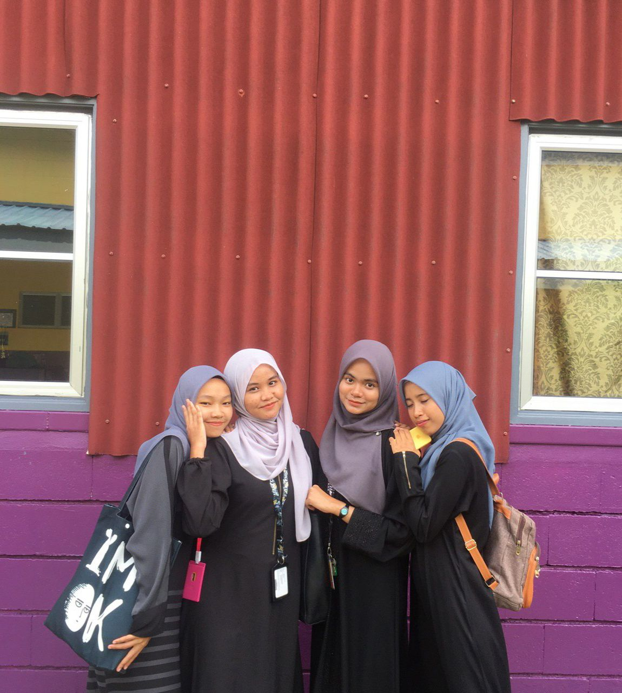
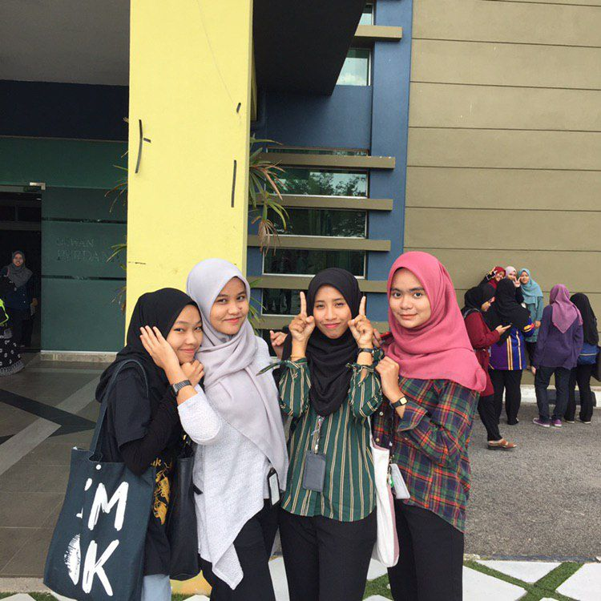
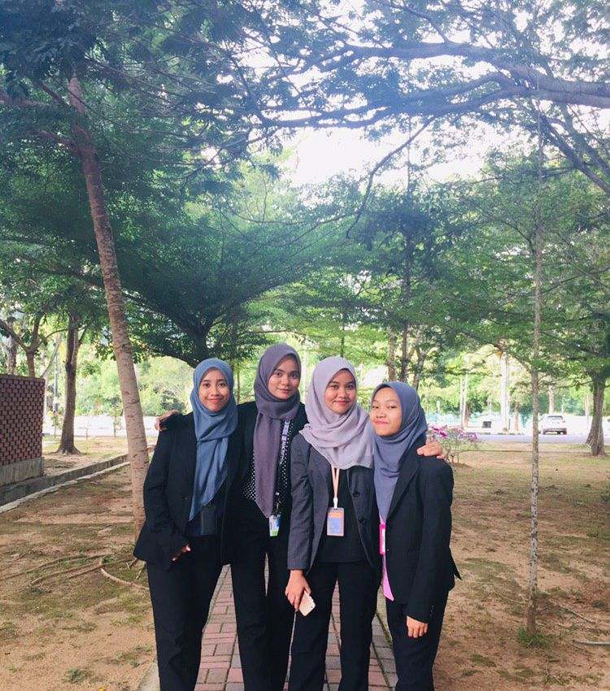
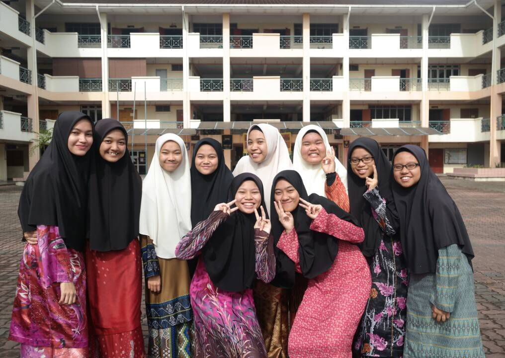
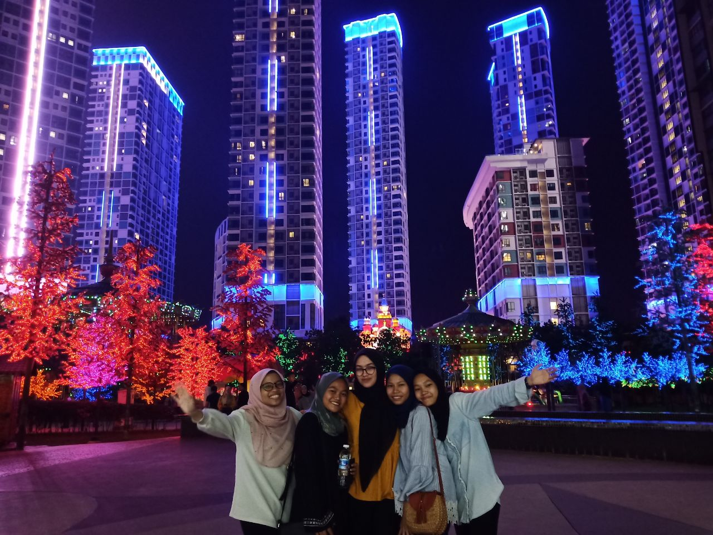

In university, I have three close friends. They are like family to me because the bonding that we have. We started to know each other since interim session beacuse we are in the same class.They are Anis Suraya, Mashitoh and Nur 'Aina Munirah. All of them are very kind and hardworking. I adore each one of them. As for Anis, she has a very high leadership while Mashitoh is the clever one. And last but not least, Aina has a very beautiful face.
  Meanwhile, during my high school I have few friends that I really close. We always do stuff together. We know each other since form 1 and we become close until now. They are like a part of my family. Eventhough all of us rarely met but the friendship is still strong.
 